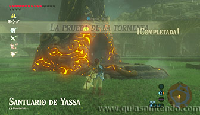

Se encuentra en la región de la torre de las colinas, pero tendrás que completar una Prueba heroica (La prueba de la tormenta) para que aparezca la entrada. Para activarla tendrás que ir a meseta del trueno (al oeste de la torre) y encontrarás una estructura circular con 4 torres en su interior.
Al llegar te encontrarás con una tormenta, así que debes guardar tu equipo metálico
para evitar los rayos. Podrás subir fácilmente a la estructura circular aprovechando que
la muralla está semidestruida por un par de lugares. Una vez arriba, verás las 4 torres y
si te fijas verás un símbolo de color delante de cada una de ellas (verde, rojo, morado y
azul).
La prueba consiste en colocar 4 esferas en sus respectivos agujeros (cada uno delante de una torre).
Como cada esfera tiene un color determinado te será muy sencillo distinguirlas sin necesidad de
fijarte en el símbolo. La esfera morada se encuentra justo a los pies de la torre con el símbolo
morado.
La esfera verde está justo encima de la torre con el símbolo verde, tendrás que escalar la torre para bajarla. Puedes conseguirlo a pesar de la lluvia si tienes suficiente resistencia. Si no lo consigues usa la Furia de Revali.
Las dos esferas restantes están fuera de la esta zona circular, encima de dos estatuas. Para subir a estas estatuas y acceder a las esferas tendrás que hacer lo mismo que en las torres anteriores (escalar con resistencia o volar).
Sin embargo, para llevar las esferas hasta allí tendrás que usar otro método. Coloca cada esfera en el borde de la estatua donde se encuentra y después apunta al centro de la estructura circular. Ahora usa paralizar y golpéala con algún arma contundente (un martillo es ideal). Si lo haces bien, las esferas caerán cerca de las torres y solo tendrás que cogerlas y colocarlas en su lugar correspondiente.
Al estar las cuatro esferas colocadas correctamente se completará la prueba heroica y aparecerá la entrada al santuario.

Una vez en su interior rompe todos los bloques agrietados que veas. Usa las bombas para lograrlo de forma rápida y eficaz. Así encontrarás un gran bloque de metal y un cofre que contiene una Túnica aislante.
Ahora podrás usar el gran bloque de metal con el imán para hacer caer un segundo cofre que se encuentra en lo alto de una columna (contiene un trozo de Ópalo). Al hacerlo podrás colocar el gran bloque en el hueco que hay para poder subir hacia el altar.

Allí hay más rocas que tendrás que destruir y después usa de nuevo el imán para colocar el bloque de metal sobre el interruptor que se ve abajo. Si no ves el interruptor es que no has destruido todos los bloques agrietados que hay, así que baja y usa más bombas, después vuelve a subir y repite la acción. Ten en cuenta que tendrás que colocar el bloque sobre el interruptor estando tú arriba, ya que si no, no podrás subir.
Al pulsar el interruptor con el bloque de metal se abrirá la puerta que da al altar y podrás llegar a él para conseguir el símbolo de valía.